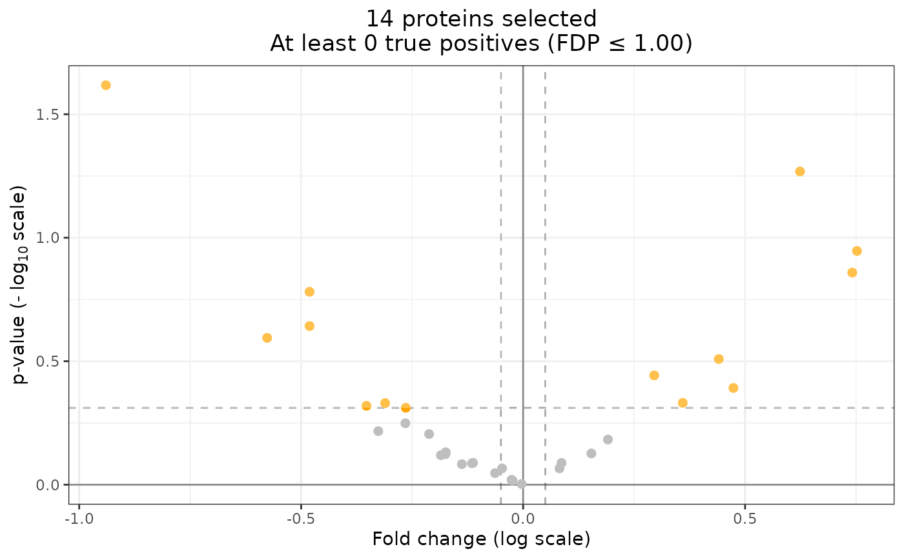

volcanoPlot.SansSouci4DT.RdCreate a volcano plot from a SansSouci4DT object. This volcano plot is made
with ggplot2 and indicates the number of selected proteins with the given
thresholds, as well as the minimal number of true positives.
# S3 method for class 'SansSouci4DT'
volcanoPlot(
x,
pval_thr = 1,
qval_thr = 1,
logfc_thr = 0,
conditions = NULL,
pal = NULL,
interactive = FALSE,
...
)A SansSouci4DT object. Must be calibrated using the
function sanssouci::fit.
A numeric(1) which is the p-value threshold under which
proteins are selected.
A numeric(1) which is the q-value threshold under which
proteins are selected.
A numeric(1) which is the absolute log(fold change)
threshold above which proteins are selected.
A character(2) containing the names of both conditions.
A character(2) containing the colors used for non-differential
and differential proteins.
A logical(1) defining if the volcano plot should be
interactive and use plotly (TRUE) or not and use ggplot2 (FALSE).
unused
If interactive is TRUE, a plotly object providing a volcano
plot. Else, a ggplot2 object providing a volcano plot.
library(sanssouci)
n <- 20
p <- 32
X <- as.data.frame(matrix(rnorm(n * p), ncol = n))
colnames(X) <- paste0("S", seq_len(n))
X[, "names"] <- paste0("Prot", seq_len(p))
group <- rep(c(1, 0), length.out = n)
obj <- QFeatures::readQFeatures(X,
quantCols = seq_len(n),
fnames = "names",
name = "datatest"
)
#> Checking arguments.
#> Loading data as a 'SummarizedExperiment' object.
#> Formatting sample annotations (colData).
#> Formatting data as a 'QFeatures' object.
#> Setting assay rownames.
coldata <- data.frame(
quantCols = paste0("S", seq_len(n)),
Condition = group,
Bio.Rep = as.character(seq_len(n))
)
rownames(coldata) <- coldata$quantCols
SummarizedExperiment::colData(obj) <- coldata
ss_obj <- SansSouci4DT(obj)
ss_obj <- sanssouci::fit(ss_obj, alpha = 0.5, B = 100)
volcanoPlot(ss_obj, pval_thr = 0.5, logfc_thr = 0.05)

if (FALSE) { # \dontrun{
volcanoPlot(ss_obj, pval_thr = 0.5, logfc_thr = 0.05, interactive = TRUE)
} # }